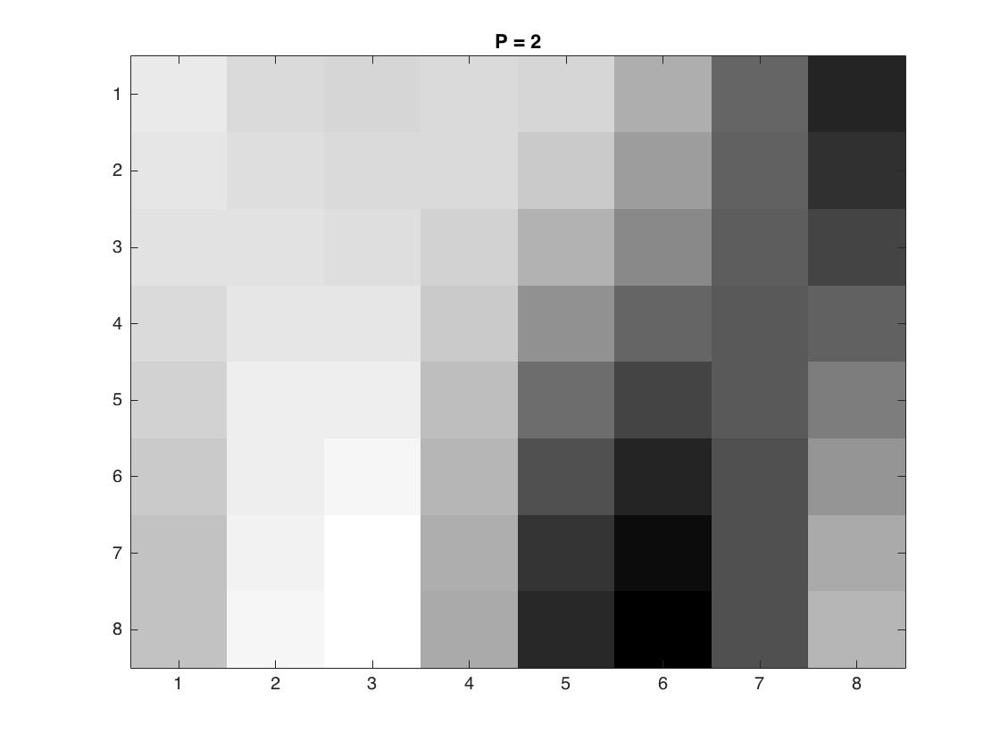
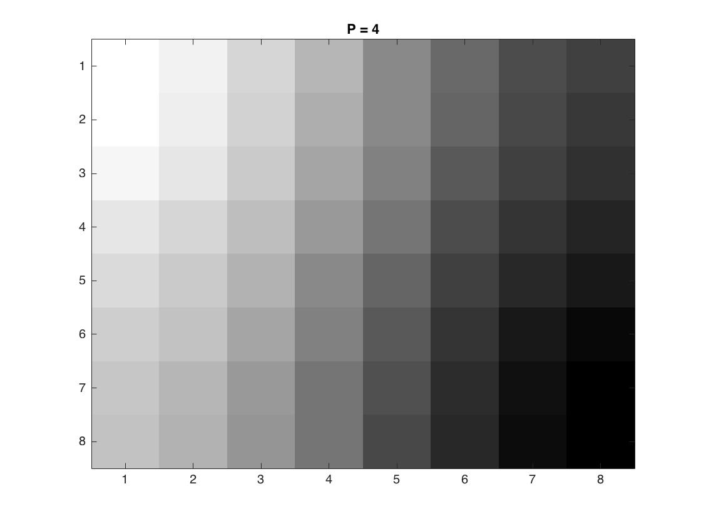
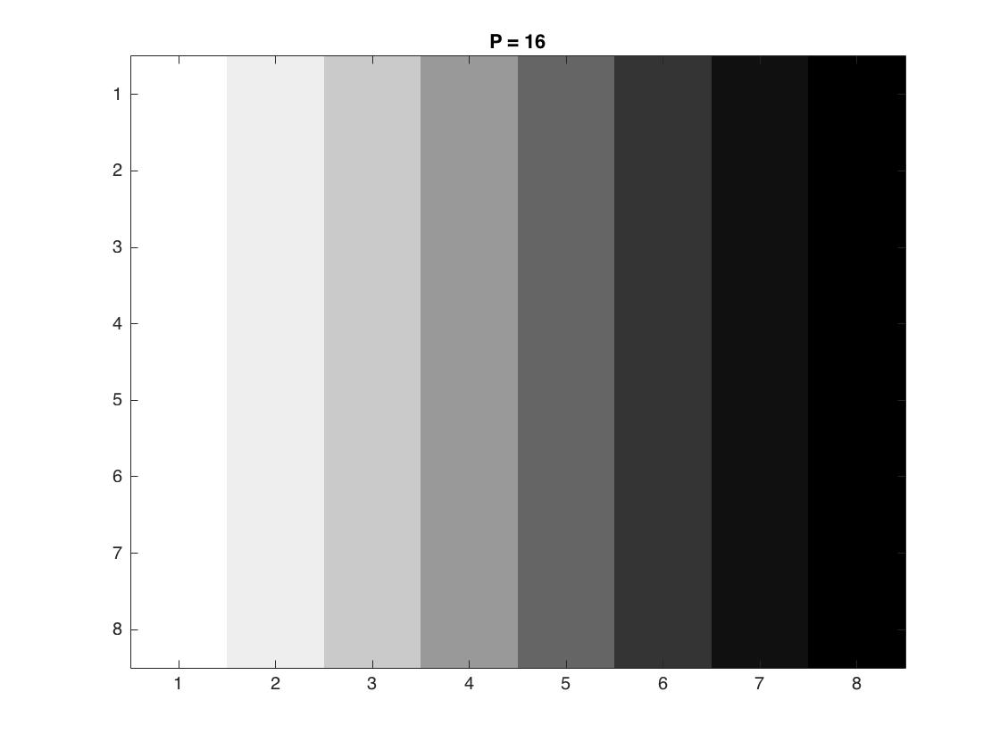
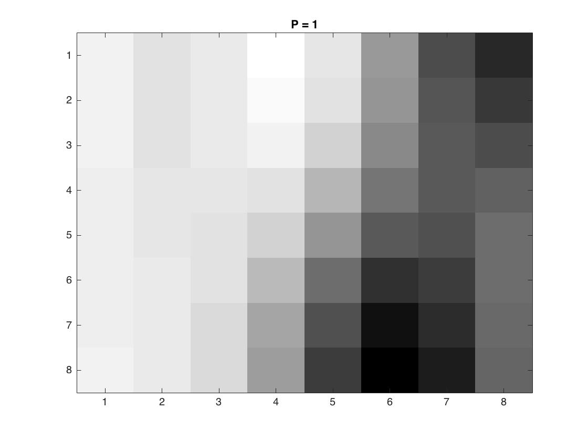
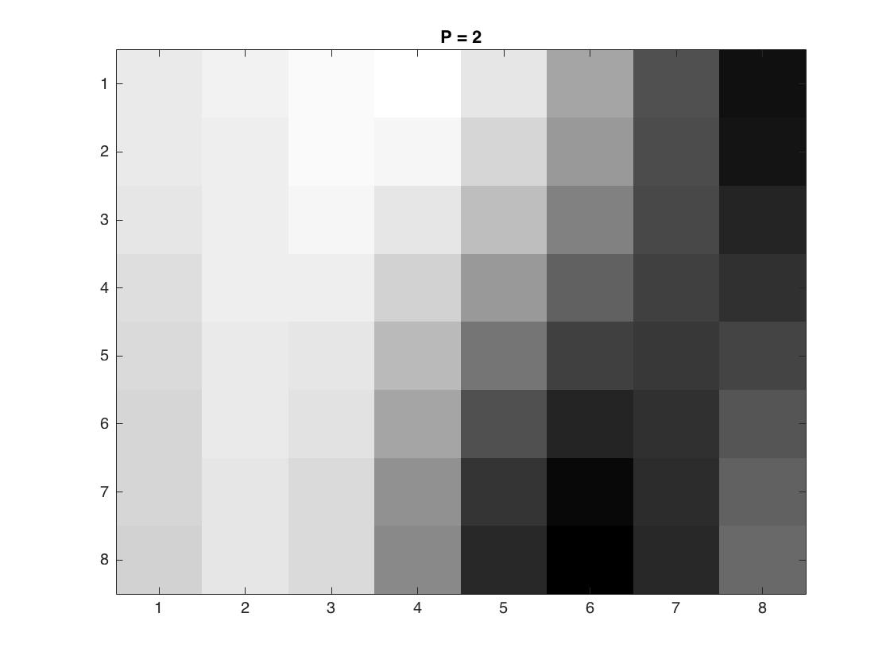
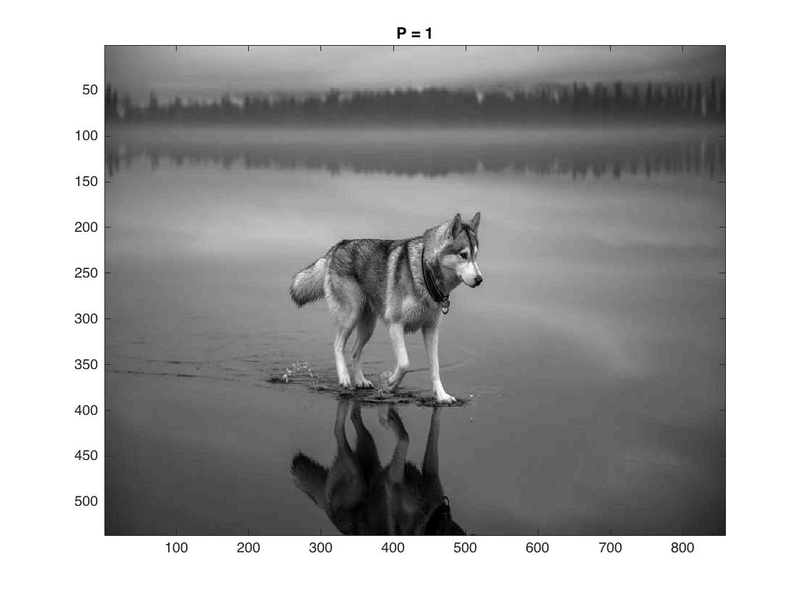
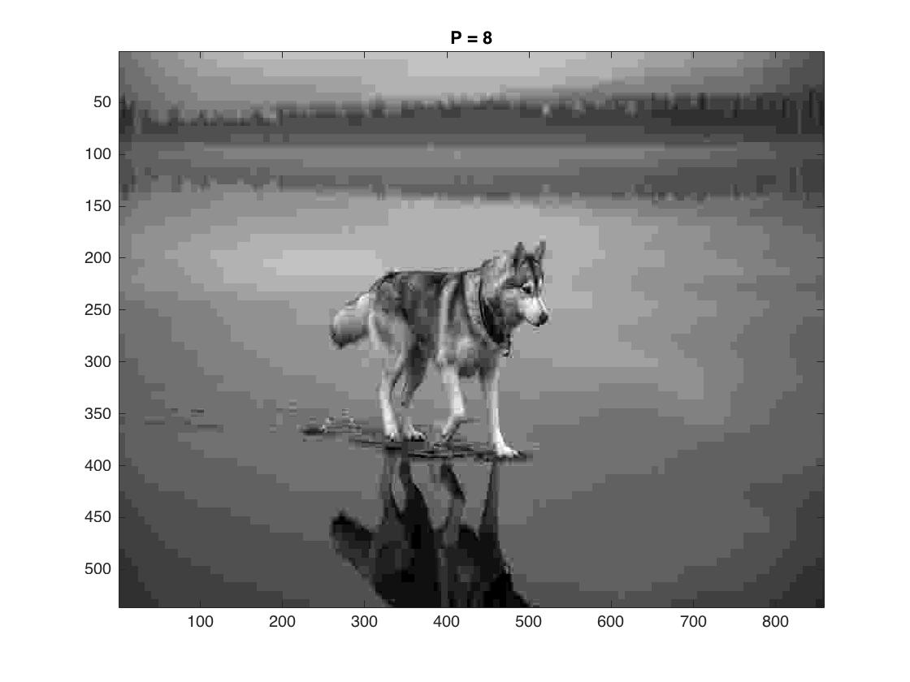
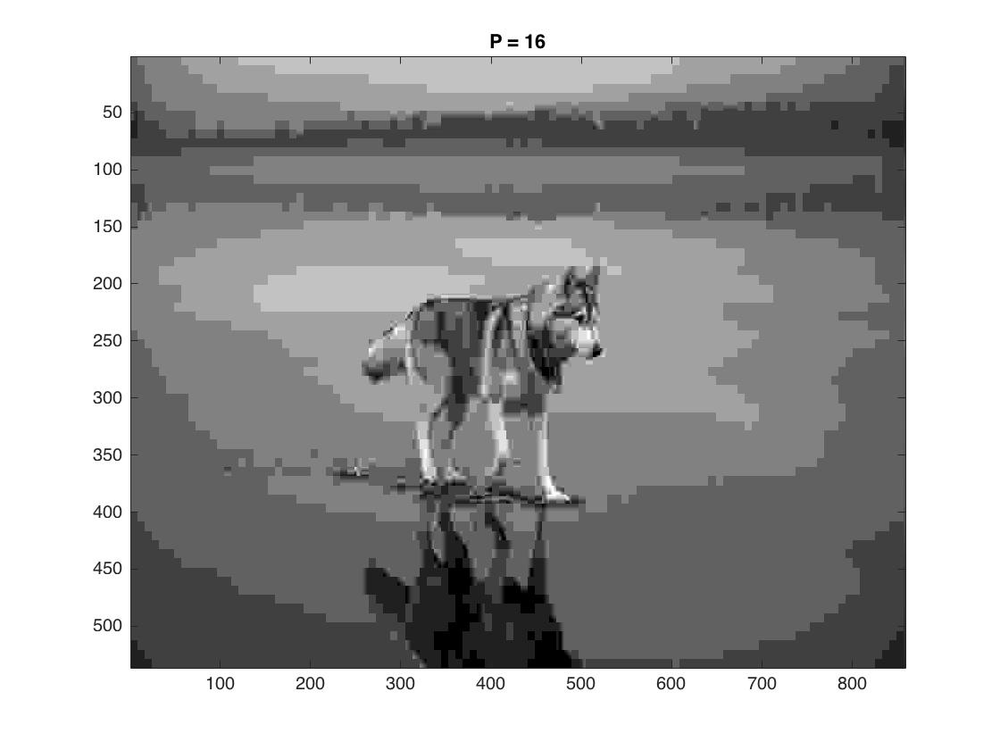

Image compression is the process of removing high-noise signals from a matrix of RGB color values. In order to do this, we use a discrete cosine transform, which converts an 8 x 8 block of pixels into its frequency components. This is done by defining a DCT matrix: $$ C_{ij} = \frac{\sqrt{2}}{\sqrt{n}}a_icos\frac{i(2j + 1)\pi}{2n},$$ where \(a_i = \frac{1}{\sqrt{2}}\) if \(i = 0\) or \(a_i = 1\) if \(1 \leq i \leq n-1\). The \(C\) matrix comes from a least squares approximation of our data points. The discrete cosine transform of a two-dimensional matrix of pixels \(X\) is \(Y = CXC^T\). Since \(C\) is orthonormal, \(C^{-1} = C^T\), so the inverse discrete cosine transform is \(X = C^TYC\). Upon transforming our original image, we use the standard JPEG quantization matrix: $$ Q_c = p \begin{bmatrix} 16 & 11 & 10 & 16 & 24 & 40 & 51 & 61 \\ 12 & 12 & 14 & 19 & 26 & 58 & 60 & 55 \\ 14 & 13 & 16 & 24 & 40 & 57 & 69 & 56 \\ 14 & 17 & 22 & 29 & 51 & 87 & 80 & 62 \\ 18 & 22 & 37 & 56 & 68 & 109 & 103 & 77 \\ 24 & 35 & 55 & 64 & 81 & 104 & 113 & 92 \\ 49 & 64 & 78 & 87 & 103 & 121 & 120 & 101 \\ 72 & 92 & 85 & 98 & 112 & 100 & 103 & 99 \\ \end{bmatrix} $$ Since Y tells us the strength of the signal at each point in the 8x8 block, dividing Y by Q element-wise and rounding to the nearest integer will swamp out all components whose magnitudes \(Y_{ij}\) are below a certain range: \(\frac{1}{2}Q_{ij}\). The loss parameter \(p\) scales the matrix to either increase or decrease this rounding error. Storing this \(Y\) matrix in memory is far more efficient since many of the components of the matrix will be zero. We can retrieve our original \(X\) with low RMSE (due to the least-squares approximation) by using the inverse DCT.
Here we compress the following 858 x 536 image in black and white and in color
We began by compressing an arbitrary 8x8 block, starting at (400,450). Both the linear
and JPEG quantization matrices were used. The code was modified to only compress and return
the matrix of a single 8x8 block rather than the whole image. We then found the
\(Y_Q\) matrix and the compressed block for \(p = 1,2,4,8,16\).
The uncompressed 8x8 blocks is shown below:
This true pixel values for this block (rounded to the nearest integer) is given by:
$$
X =
\begin{bmatrix}
115 & 115 & 119 & 113 & 118 & 97 & 66 & 57 \\
115 & 115 & 120 & 111 & 112 & 91 & 61 & 62 \\
113 & 116 & 113 & 110 & 115 & 84 & 62 & 70 \\
111 & 120 & 112 & 113 & 113 & 73 & 67 & 73 \\
111 & 118 & 112 & 113 & 95 & 59 & 73 & 72 \\
113 & 114 & 112 & 105 & 69 & 46 & 71 & 73 \\
115 & 115 & 116 & 102 & 58 & 43 & 63 & 73 \\
116 & 117 & 107 & 93 & 61 & 52 & 59 & 73 \\
\end{bmatrix}
$$
| \(Y_Q\) | Result Image |
|---|---|
| $$ Y_{Q_1} = \begin{bmatrix} -35 & 10 & -1 & -1 & 0 & 0 & 0 & 0 \\ 3 & 0 & -2 & 1 & 0 & 0 & 0 & 0 \\ 0 & 0 & 0 & 0 & 0 & 0 & 0 & 0 \\ 0 & 0 & 0 & 0 & 0 & 0 & 0 & 0 \\ 0 & 0 & 0 & 0 & 0 & 0 & 0 & 0 \\ 0 & 0 & 0 & 0 & 0 & 0 & 0 & 0 \\ 0 & 0 & 0 & 0 & 0 & 0 & 0 & 0 \\ 0 & 0 & 0 & 0 & 0 & 0 & 0 & 0 \\ \end{bmatrix} $$ |  |
| $$ Y_{Q_2} = \begin{bmatrix} -17 & 5 & 0 & -1 & 0 & 0 & 0 & 0 \\ 1 & 0 & -1 & 1 & 0 & 0 & 0 & 0 \\ 0 & 0 & 0 & 0 & 0 & 0 & 0 & 0 \\ 0 & 0 & 0 & 0 & 0 & 0 & 0 & 0 \\ 0 & 0 & 0 & 0 & 0 & 0 & 0 & 0 \\ 0 & 0 & 0 & 0 & 0 & 0 & 0 & 0 \\ 0 & 0 & 0 & 0 & 0 & 0 & 0 & 0 \\ 0 & 0 & 0 & 0 & 0 & 0 & 0 & 0 \\ \end{bmatrix} $$ |  |
| $$ Y_{Q_4} = \begin{bmatrix} -9 & 3 & 0 & 0 & 0 & 0 & 0 & 0 \\ 1 & 0 & 0 & 0 & 0 & 0 & 0 & 0 \\ 0 & 0 & 0 & 0 & 0 & 0 & 0 & 0 \\ 0 & 0 & 0 & 0 & 0 & 0 & 0 & 0 \\ 0 & 0 & 0 & 0 & 0 & 0 & 0 & 0 \\ 0 & 0 & 0 & 0 & 0 & 0 & 0 & 0 \\ 0 & 0 & 0 & 0 & 0 & 0 & 0 & 0 \\ 0 & 0 & 0 & 0 & 0 & 0 & 0 & 0 \\ \end{bmatrix} $$ |  |
| $$ Y_{Q_8} = \begin{bmatrix} -4 & 1 & 0 & 0 & 0 & 0 & 0 & 0 \\ 0 & 0 & 0 & 0 & 0 & 0 & 0 & 0 \\ 0 & 0 & 0 & 0 & 0 & 0 & 0 & 0 \\ 0 & 0 & 0 & 0 & 0 & 0 & 0 & 0 \\ 0 & 0 & 0 & 0 & 0 & 0 & 0 & 0 \\ 0 & 0 & 0 & 0 & 0 & 0 & 0 & 0 \\ 0 & 0 & 0 & 0 & 0 & 0 & 0 & 0 \\ 0 & 0 & 0 & 0 & 0 & 0 & 0 & 0 \\ \end{bmatrix} $$ | |
| $$ Y_{Q_{16}} = \begin{bmatrix} -2 & 1 & 0 & 0 & 0 & 0 & 0 & 0 \\ 0 & 0 & 0 & 0 & 0 & 0 & 0 & 0 \\ 0 & 0 & 0 & 0 & 0 & 0 & 0 & 0 \\ 0 & 0 & 0 & 0 & 0 & 0 & 0 & 0 \\ 0 & 0 & 0 & 0 & 0 & 0 & 0 & 0 \\ 0 & 0 & 0 & 0 & 0 & 0 & 0 & 0 \\ 0 & 0 & 0 & 0 & 0 & 0 & 0 & 0 \\ 0 & 0 & 0 & 0 & 0 & 0 & 0 & 0 \\ \end{bmatrix} $$ |  |
| \(Y_Q\) | Result Image |
|---|---|
| $$ Y_{Q_1} = \begin{bmatrix} -17 & 15 & -2 & -2 & 1 & 0 & 0 & 0 \\ 4 & -1 & -4 & 2 & 0 & 0 & 0 & 0 \\ -1 & 1 & 0 & 0 & 0 & 0 & 0 & 0 \\ 0 & 0 & 0 & 0 & 0 & 0 & 0 & 0 \\ 0 & 0 & 0 & 0 & 0 & 0 & 0 & 0 \\ 0 & 0 & 0 & 0 & 0 & 0 & 0 & 0 \\ 0 & 0 & 0 & 0 & 0 & 0 & 0 & 0 \\ 0 & 0 & 0 & 0 & 0 & 0 & 0 & 0 \\ \end{bmatrix} $$ |  |
| $$ Y_{Q_2} = \begin{bmatrix} -9 & 7 & -1 & -1 & 0 & 0 & 0 & 0 \\ 2 & 0 & -2 & 1 & 0 & 0 & 0 & 0 \\ 0 & 0 & 0 & 0 & 0 & 0 & 0 & 0 \\ 0 & 0 & 0 & 0 & 0 & 0 & 0 & 0 \\ 0 & 0 & 0 & 0 & 0 & 0 & 0 & 0 \\ 0 & 0 & 0 & 0 & 0 & 0 & 0 & 0 \\ 0 & 0 & 0 & 0 & 0 & 0 & 0 & 0 \\ 0 & 0 & 0 & 0 & 0 & 0 & 0 & 0 \\ \end{bmatrix} $$ |  |
| $$ Y_{Q_4} = \begin{bmatrix} -4 & 4 & -1 & -1 & 0 & 0 & 0 & 0 \\ 1 & 0 & -1 & 1 & 0 & 0 & 0 & 0 \\ 0 & 0 & 0 & 0 & 0 & 0 & 0 & 0 \\ 0 & 0 & 0 & 0 & 0 & 0 & 0 & 0 \\ 0 & 0 & 0 & 0 & 0 & 0 & 0 & 0 \\ 0 & 0 & 0 & 0 & 0 & 0 & 0 & 0 \\ 0 & 0 & 0 & 0 & 0 & 0 & 0 & 0 \\ 0 & 0 & 0 & 0 & 0 & 0 & 0 & 0 \\ \end{bmatrix} $$ | |
| $$ Y_{Q_8} = \begin{bmatrix} -2 & 2 & 0 & 0 & 0 & 0 & 0 & 0 \\ 0 & 0 & 0 & 0 & 0 & 0 & 0 & 0 \\ 0 & 0 & 0 & 0 & 0 & 0 & 0 & 0 \\ 0 & 0 & 0 & 0 & 0 & 0 & 0 & 0 \\ 0 & 0 & 0 & 0 & 0 & 0 & 0 & 0 \\ 0 & 0 & 0 & 0 & 0 & 0 & 0 & 0 \\ 0 & 0 & 0 & 0 & 0 & 0 & 0 & 0 \\ 0 & 0 & 0 & 0 & 0 & 0 & 0 & 0 \\ \end{bmatrix} $$ | |
| $$ Y_{Q_{16}} = \begin{bmatrix} -1 & 1 & 0 & -1 & 0 & 0 & 0 & 0 \\ 0 & 0 & 0 & 0 & 0 & 0 & 0 & 0 \\ 0 & 0 & 0 & 0 & 0 & 0 & 0 & 0 \\ 0 & 0 & 0 & 0 & 0 & 0 & 0 & 0 \\ 0 & 0 & 0 & 0 & 0 & 0 & 0 & 0 \\ 0 & 0 & 0 & 0 & 0 & 0 & 0 & 0 \\ 0 & 0 & 0 & 0 & 0 & 0 & 0 & 0 \\ 0 & 0 & 0 & 0 & 0 & 0 & 0 & 0 \\ \end{bmatrix} $$ |
There are very subtle differences between the blocks when using the two quantization methods. In order to determine which of the methods is better for this image, we compare the complete compressed images. The original black and white image is shown below, along with a table comparing compression using linear and JPEG quantization matrices.
| Linear Quantization | JPEG Quantization |
|---|---|
|  | |
 |
|
|  | |
|  |
As we can see, the linear quantization matrix returns slightly better images, especially at higher \(p\) values compared to the JPEG quantization matrix. This is surprising as we expect the JPEG matrix to yield better results in most cases.
In this section, we essentially run our compression code three times, for the R, G, and B matrices respectively, then combine them to obtain a final compressed color image. Only the linear quantization matrix was used in this case. The video below shows how increments in \(p\) can slowly reduce image quality for \(p\) between 1 and 200:
We can also see the effect of compression on a single 8x8 block. Using the same block as before:
The below video demonstrates the deviation in colors in the block as we increase our loss parameter, eventually leading to only gray.
For a high resolution image (6000 x 4000), a cartoon effect can be seen for values of \(p = 16\)
In this section, we explore another compression method known as YUV compression, where we define the Luminescence $$Y = 0.299R + 0.587G + 0.114B$$, and the color differences $$ U = B - Y \\ V = R - Y$$. We can compress any image in the YUV color system and convert back RGB as well. This method handles colors more delicately than the standard JPEG method.
The following YUV compressed images were obtained
Below is the video for values of \(p\) between \(1\) and \(100\)